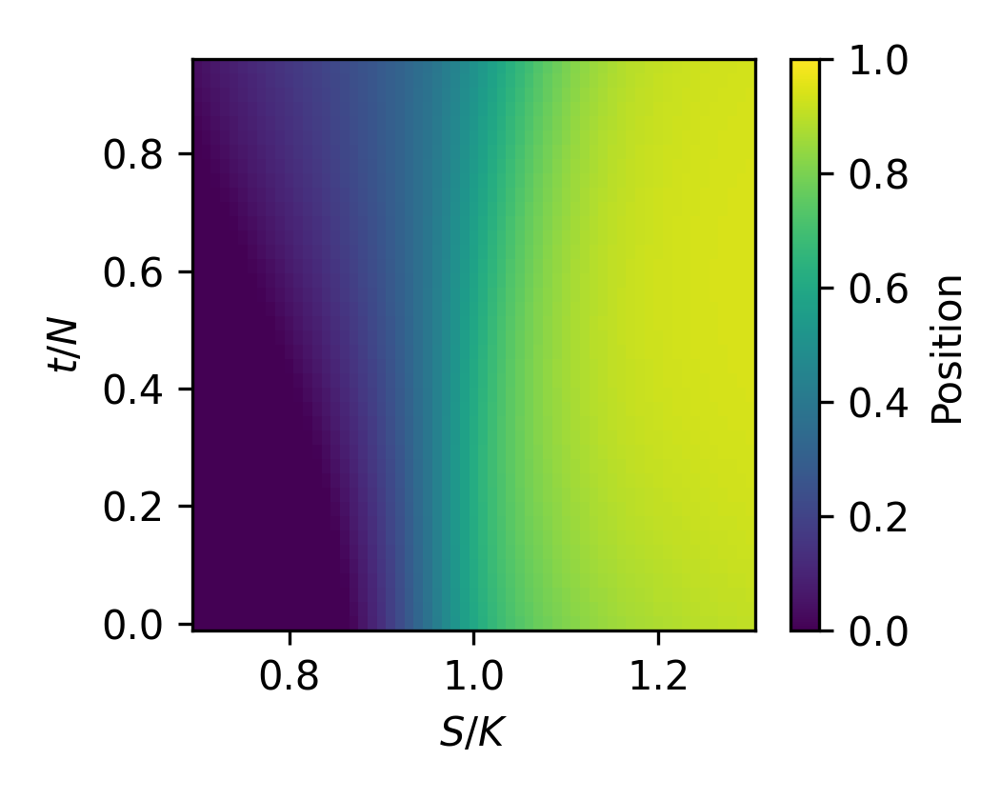

Deep Hedging with Reinforcement Learning
A PPO agent that learns to hedge a European call option — and recovers the Black–Scholes delta from reward alone, without ever being told what delta is.

What this is
A from-scratch reinforcement-learning approach to option hedging. A PPO agent is trained on simulated Geometric Brownian Motion price paths to hedge a short European call, framed as a Markov Decision Process with a self-financing bank account. The agent is evaluated against the classical Black–Scholes delta-hedging benchmark, with and without transaction costs.
Key results
- The agent recovers the Black–Scholes delta surface from reward alone — its learned position as a function of moneyness and time closely matches the theoretical hedge ratio, despite never observing it.
- Under transaction costs, the agent converges to a near-static hedge rather than continuous replication — a rational, cost-minimizing response that trades hedging quality for lower trading costs.
- The policy generalizes across strike levels it was never trained on, and degrades gracefully under volatility mismatch, its error growing more slowly than fixed-volatility delta-hedging as realized volatility rises.
- As a bonus, the simulation-trained agent transfers to real market data, tracking a sensible hedge on a live underlying price path.
The story behind it
This project was as much a debugging exercise as a modelling one. Early agents collapsed to degenerate policies — first a bang-bang policy (jump fully in, then fully out), which turned out to be the correct optimum of a misspecified reward that had no cash account. Adding a self-financing bank account fixed the objective. Later, high entropy and small rollout buffers caused training instability (a rise-then-collapse learning curve), resolved by tuning exploration and enlarging the buffer. Under transaction costs, the agent found yet another degenerate optimum — a static buy-and-hold hedge — which, rather than being “fixed”, became an interesting finding in its own right about how costs reshape the optimal policy. The final agent is a genuine dynamic hedger, and the evaluation quantifies exactly where and why it departs from Black–Scholes.
Repository structure
.
├── 1.0_Model_Training/
│ ├── Train_Models.py # MDP env (HedgingEnv), PPO training, hyperparameter grid
│ ├── Evaluate_Models.py # single-model diagnostic rollouts
│ ├── Training_Curve.py # plots learning curves from eval logs
│ └── Trained_Models/ # (regenerated by training; see note below)
│ └── grid_results.csv # best validation reward per configuration
├── 2.0_Model_Evaluation/
│ ├── Common.py # shared rollout / benchmark / stats functions
│ ├── 2.1_Sensitivity_Analysis/ # hyperparameter grid table + learning curves
│ ├── 2.2_NoCost_Analysis/ # no-cost P&L, paths, histogram
│ ├── 2.3_Cost_Analysis/ # cost P&L, paths, histogram
│ ├── 2.4_Regime_Comparison/ # per-strike table + delta surfaces
│ └── 2.5_Volatility_Robustness/ # volatility-mismatch table + curves
└── 3.0_Hedging_SPY_(NOT_IN_REPORT)/ # bonus: agent applied to real market data
├── fetch_data.py # downloads price data (run locally, needs internet)
└── real_hedging.py # runs the trained agent on the real pathReproducing the results
Requirements: Python 3.14+ and the packages in requirements.txt:
Pipeline (run in order): 1. python 1.0_Model_Training/Train_Models.py — trains the 18-model grid (~3 hours on CPU). Produces Trained_Models/ and grid_results.csv. 2. Set the selected configurations in 2.0_Model_Evaluation/common.py (the SELECTED dict), based on grid_results.csv. 3. Run the evaluation scripts 2.1 through 2.5 — each produces the tables and figures for its section.
The trained model binaries are not committed (they are large and fully regenerated by step 1). The bonus module in 3.0_Real_Data/ requires internet for fetch_data.py; the resulting price CSV is committed so real_hedging.py runs offline.
Notes
- The MDP formulation, experimental design, and analysis are documented in the accompanying report.
- AI assistance (Claude) was used for debugging, code structuring, and drafting; all modelling decisions and interpretations were made and verified by the author.
License
MIT — see LICENSE.